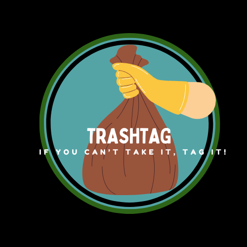

Project Deliverables
Key componenents from our project

If you can't take it, TAG it!
Outdoor recreation areas such as parks, rivers, lakes, and beaches accumulate large amounts of trash. Many independent organizations and local governments spend time and resources trawling these areas looking for litter, debris, and dumping to clean up. Not everyone that visits these locations are capable or ready to pick up large amounts of trash. Some large litter and dumping requires planning and/or equipment for proper and safe removal. Many of these areas are also very large and clean up crews must walk great distances in search of any trash that must be picked up.
END USERS: Community members such as hikers and beachgoers who encounter trash while participating in an outdoor activity and want to report it for cleanup.
CUSTOMERS: Cleanup organizations such as park services and waste management departments that plan for trash removal.
Provide the public a way of quickly communicating the scope and location of found litter, trash, and dumping to organizations willing and interested in clean up. A system where users can easily upload geotagged photos of litter or dumping, thus providing a map of areas to clean for the city, volunteer organizations, or even motivated individuals so the trash could be removed far more quickly and efficiently. The photos serve as easy visual identification of the trash as well as the scope of the problem. Over time, the data can even be used for public education or even city officials to dispatch people to problem areas as a preventative measure.
The Problem and our Solution
Independent organizations and local governments struggle to efficiently locate and remove litter in outdoor recreational areas such as parks, rivers, lakes, and beaches. Without knowing locations and characteristics of waste items, volunteer efforts can be left unprepared and ineffective. Communities lack a live reporting system to connect citizens with organizations capable of safe and efficient waste removal efforts.
TrashTag aims to improve the litter and waste cleanup process by developing a mobile application where users can photograph and report piles of waste, give their exact locations, and connect with cleanup groups that are well-equipped to handle the cleanup process in order to improve environmental wellbeing and preserve nature’s beauty for the public eye. We are committed to helping the environment and the public by providing a resource that clearly highlights the location, extent, type and weight of the waste as well as provides updates regarding existing cleanup efforts, dangers and geographic littering patterns to help cleanup crews allocate their time and resources more effectively.
Check out our presentations for CS410 and CS411W!
Key componenents from our project
Lab Outline and Individual team member submissions
How TrashTag functions in our community
This Is Our Story

Team Lead
Scott is an experienced software developer and manager. After 15 years in the industry, he has returned to finish his Bachelor’s and then Master’s in Computer Science. With him at home are his wife, 4-year-old daughter, two cats, and a dog. While not doing school work or playing with his daughter, he is doing freelance writing for tabletop role playing games.

Front End Developer & Document Specialist
Sara is a full-time Computer Science student at ODU. She completed her Associates in Engineering and hopes to obtain her Master's in Computer Science in the near future.

Full Stack Developer
Emily is a full-time senior studying Computer Science at ODU. She plans to go on to obtain her Master’s degree in Computer Science after graduating with her Bachelor’s degree in May 2026.

Back End Developer & Database Design
Teddy is a full-time engineer and a Computer Science student at Old Dominion University. He completed his Bachelor’s of Arts in Music Performance from West Virginia University and enjoys merging his creativity with technical hobbies like woodworking, 3D printing, and exploring new technologies.

Back End Developer & Test Analyst
Luca is a published first author on an interdisciplinary paper in Computer Science and Human Factors Psychology. She is a senior in Computer Science with plans to do a Master’s in Computer Science.

Full Stack Developer & GIS Specialist
Adam is currently a full-stack web developer at Vivian Contracting LLC. In addition to CS, he is doing a Minor in Data Science and plans to pursue a Master’s in Computational Analytics.
Trashtag Reference Material
[1]“Volunteers Gather Over 16,000 Pounds of Trash from the San Marcos River.” Corridor News, 13 Apr. 2020, https://smcorridornews.com/volunteers-gather-over-16000-pounds-of-trash-from-the-san-marcos-river/
[2]Fawaz, Maya. “Hundreds of Volunteers will fan out on San Marcos waterways Saturday to clean up trash.” Kut News, 3 Mar. 2023, https://www.kut.org/energy-environment/2023-03-03/hundreds-of-volunteers-will-fan-out-on-san-marcos-waterways-saturday-to-clean-up-trash
[3]“54th San Marcos River Rendezvous Clean Up.” Texas Rivers Protection Association, https://txrivers.org/texas-river-blog/54th-san-marcos-river-rendezvous-clean-up/. Accessed 23 Sept. 2025.
[4]Mendoza, Madalyn. “San Marcos River litter 2018.” My San Antonio, 31 May 2018, https://www.mysanantonio.com/news/local/slideshow/San-Marcos-River-litter-2018-181939.php
[5]Earth Day. “How Our Trash Impacts the Environment.” EarthDay.org, updated 22 Sept. 2025, www.earthday.org/how-our-trash-impacts-the-environment/.Accessed 30 Sept. 2025.
[6]thomas. “How Does Littering Affect the Environment?” Texas Disposal Systems, 1 Feb. 2024, https://www.texasdisposal.com/blog/the-real-cost-of-littering/.
[7]“On This 52nd Annual Earth Day, What Is the State of Litter in Virginia?” VPM, 22 Apr. 2022, https://www.vpm.org/news/2022-04-21/on-this-52nd-annual-earth-day-what-is-the-state-of-litter-in-virginia.
[8]“Cleaning Litter along Arkansas Roads Costs Millions in Taxpayer Money.” Thv11.Com, 28 Oct. 2021, https://www.thv11.com/article/news/education/arkansas/litter-costs-arkansas-taxpayers-millions/91-38fe040f-82c7-4698-a34a-d8cf7d77de34
[9]Garza, Ariana. “More than $40 Million Taxpayer Dollars Spent Annually on Texas Litter Cleanup.” KTXS, 25 Mar. 2014, https://ktxs.com/news/abilene/more-than-40-million-taxpayer-dollars-spent-annually-on-texas-litter-cleanup_20160517100457192.
[10]Picking up Litter: Pointless Exercise or Powerful Tool in the Battle to Beat Plastic Pollution?, 2018, www.unep.org/news-and-stories/story/picking-litter-pointless-exercise-or-powerful-tool-battle-beat-plastic.
[11]Lara. “The Economics of Litter.” Keep Texas Beautiful, 10 Oct. 2024, ktb.org/ktb-blog/the-economics-of-litter/#:~:text=Infrastructure%20Impacts,million%20deficit%20in%20infrastructure%20investments.
[12]“How Litter Harms Humans, Animals, and the Environment.” Fire & Ice, https://indoortemp.com/resources/how-litter-harms-humans-animals-environment. Accessed 12 Oct. 2025.
[13]Campbell, Marnie L., et al. “Human Health Impacts from Litter on Beaches and Associated Perceptions: A Case Study of ‘Clean’ Tasmanian Beaches.” Ocean & Coastal Management, vol. 126, Jun. 2016, pp. 22–30. ScienceDirect, https://doi.org/10.1016/j.ocecoaman.2016.04.002
[14]Blouin, Lou. “The Psychology of Littering.” The Allegheny Front, 8 Jan. 2016, https://www.alleghenyfront.org/the-psychology-of-littering/.
[15]Litter in America Results from the Nation’s Largest Litter Study, www.hampton.gov/DocumentCenter/View/308/litter-factsheet-costs?bidId=. Accessed 12 Oct. 2025.
[16]How to Reduce Litter In Your Parks, https://www.miracle-recreation.com/blog/reduce-litter-in-parks/
[17]The Economics of Litter, https://ktb.org/ktb-blog/the-economics-of-litter/
[18]48,000 Pounds of Litter Removed Across Virginia on Clean the Bay Day, https://web.archive.org/web/20250622092145/https:/www.cbf.org/news-media/newsroom/2025/virginia/more-than-43000-pounds-of-litter-removed-across-virginia-on-clean-the-bay-day.html /
Key Terms and their respective defintions
The unauthorized disposal of trash and other hazardous materials onto private and or public property.
Descriptive information within data files such as date, location, and timestamp data in photos to be submitted to Trashtag.
The addition of GPS coordinates to images that enable precise location identification where trash was reported.
Live data synchronization displaying trash reports to both users and cleanup organizations instantaneously.
The incorporation of game-like mechanics such as rankings to motivate user participation and skyrocket cleanup operations.